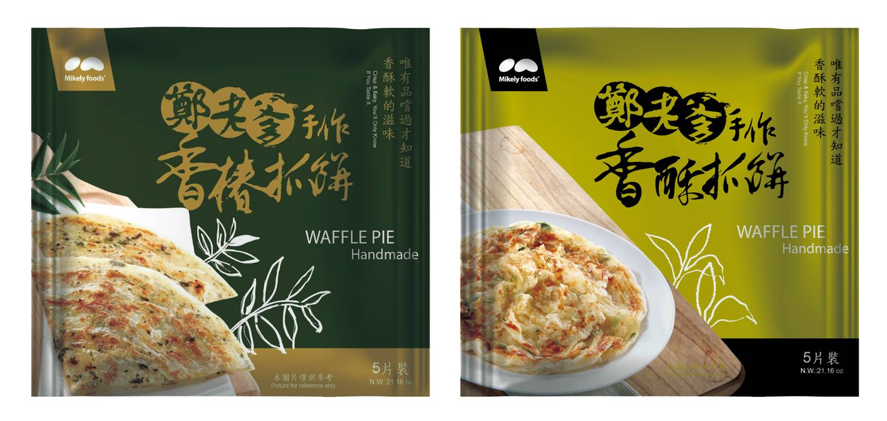

Since 2002・早餐店業務用
不用泡豆、不用磨豆，煮出現磨的好豆漿
麥可利「純到幸福」冷凍濃縮生豆漿，選用加拿大、美國非基改黃豆，工廠研磨後急速冷凍。免解凍直接下鍋，每天都是一樣的濃醇豆香。
- 非基改黃豆，無糖款成分只有「水＋黃豆」
- 1500g 業務包・-18℃ 冷凍保存一年
- 工廠直營，專人專車冷鏈物流送達


25年Since 2002 老品牌
1500g業務用大包裝
1年-18℃ 冷凍保存
2000萬產品責任險
25年
Since 2002・台中神岡
品牌故事
Since 2002，
Since 2002，
從一鍋豆漿開始
創辦人鄭瑞臺先生——大家口中的「鄭老爹」——從小生長在務農家庭。兒時沒有零食，只有自己種的地瓜、西瓜和花生，卻感到無比幸福。
為了把天然的好味道傳出去，他把最好的農產品用最好的流程加工。25 年來，麥可利從台中神岡出發，陪著全台早餐店一起早起，從冷凍濃縮生豆漿到手作抓餅，一路堅持不加防腐劑、穩定供貨。
- 25 年專注豆漿與早餐店食材
- 自有工廠台中神岡直營生產
- 全台供貨專人專車冷鏈配送
為什麼店家改用濃縮生豆漿
自己磨豆漿的麻煩，交給我們
01
省下凌晨備料
不用前一晚泡豆、清晨磨漿濾渣，開店前煮一鍋就好。
02
口味天天一致
工廠固定配方與濃度，不會因為換人煮而走味。
03
沒有豆渣、好清潔
不需要磨漿機與濾布，廚房空間與清洗時間都省下來。
04
冷凍保存一年
-18℃ 冷凍可保存一年，依每天用量取用，減少浪費。

簡單五步驟
一鍋滾水，輕鬆煮出好豆漿
- 燒開水鍋中放 3500～4000cc 水，開大火煮到大滾。
- 整包直接下鍋從冷凍庫取出，不須完全解凍，剪開袋子直接倒入滾水。
- 不斷攪拌保持大火，攪拌加速溶解。
- 冒泡轉小火維持大滾但不溢出；要加糖的話這時加入。
- 大滾 5～10 分鐘把豆香煮出來，即完成。
冷凍生漿系列
一間工廠，備齊早餐店的飲品
全系列 -18℃ 冷凍保存一年
一站備齊
豆漿配抓餅，早餐店的好搭檔
除了豆漿，麥可利也生產「鄭老爹手作抓餅」與「幸福滋味餡餅」。手作桿製、不添加人工色素，選用 SQF 最高等級食品安全麵粉，讓您一次叫貨就備齊早餐店熱賣品項。

食品安全
供應商合不合格，
供應商合不合格，
是店家最該在意的事
ISO 22000HACCPNON-GMO 非基改無添加防腐劑冷鏈配送
豆漿是早餐店每天大量供應的品項，原料來源與工廠管理直接關係到店家的商譽。麥可利的產品都經過第三方檢驗，並投保產品責任險，讓您安心賣給客人。
看完整檢驗與認證- ISO 22000 國際食品安全管理系統認證
- HACCP 食品安全管制系統
- SGS 黃豆非基因改造檢驗（純到幸福系列）
- Intertek 全國公證：黃豆黃麴毒素及農藥殘留檢驗
- Intertek 全國公證：防腐劑檢驗、微生物檢測
- 富邦產品責任險 新台幣 2,000 萬元
豆漿知識